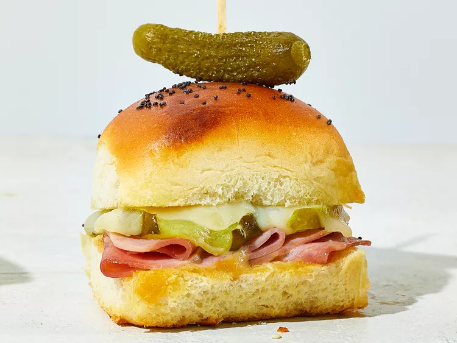

Cuban-Style Sliders

Description
Small but mighty, sliders star as shareable apps or the center of your plate. Try these Cuban-Style sliders or any of the other 4 variations on the bottom of this recipe to find your new favorite bite-size breakfast, lunch, or dinner.
Ingredients
- 1 (12-oz.) package Hawaiian sweet rools (12 rolls)
- 1/2 cup honey mustard
- 12 ounces deli ham
- 6 ounces Swicc cheese
- 3/4 cup dill pickle slices
- 3 tablespoons butter, melted
- 2 teaspoons poppy seeds
- 12 cornihorns